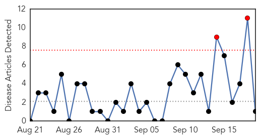
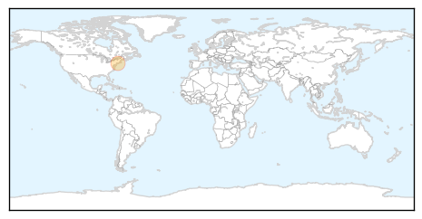
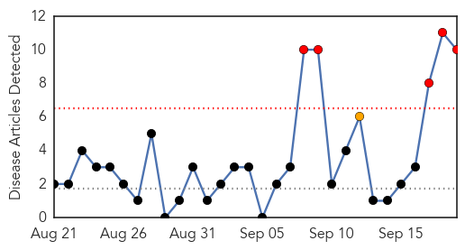
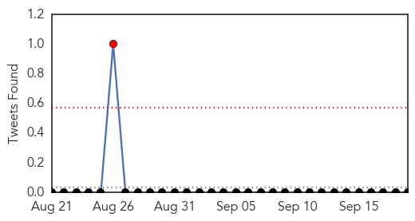

Measles
30-Day Web Trend
2 alerts, 0 warnings

30-Day Twitter Trend
0 alerts, 0 warnings

Article Locations
Article Confidences

Top Articles:
Top Tweets:
-
No tweets found for Sep 19, 2014
Meningitis
30-Day Web Trend
5 alerts, 1 warnings

30-Day Twitter Trend
1 alerts, 0 warnings

Article Locations

Article Confidences
Top Articles:
- 0.997
- Georgetown University: Sophomore Andrea Jaime confirmed positive for meningococcal meningitis B
- 0.981
- California Finds First Cases of Enterovirus D68
- 0.976
- Georgetown Student Had Most Serious Form of Meningitis
- 0.956
- New worries about Meningitis B after Georgetown student dies
- 0.936
- Georgetown offering preventive antibiotics to close friends of meningitis victim
- 0.934
- Recent Cases of Serogroup B Meningococcal Disease Reinforce Need for U.S. Vaccine: A Statement from the National Meningitis Association
- 0.887
- Predator Doctors Take Advantage of Patients With ‘Chronic Lyme’ Scam
- 0.701
- Student Died From Most Serious Form of Meningitis
- 0.691
- Georgetown student died of bacterial meningitis
- 0.663
- Georgetown Student Died From Most Serious Form of Meningitis
Top Tweets:
-
No tweets found for Sep 19, 2014